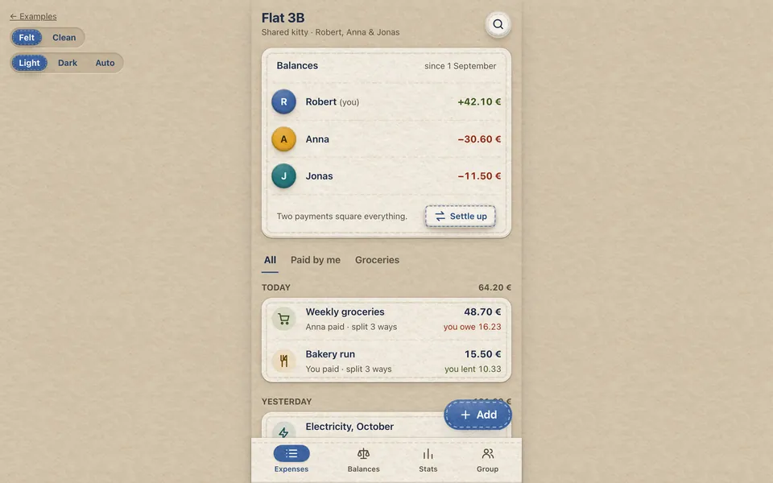

Examples
Three small apps built from nothing but felt-css and Bootstrap's JavaScript, modelled on the projects felt-css was made for. Switch look and color mode on each page; view the source and copy what you like.

Shared expenses#
A mobile-first app for splitting costs: balances, an expense list, a sewn-on tab bar and an "add expense" form with input groups and checks.